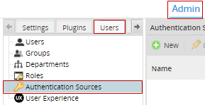
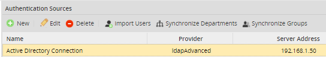
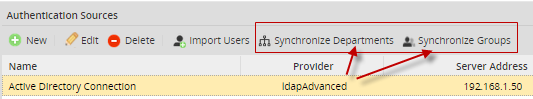
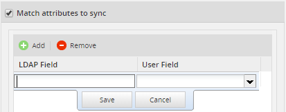

Overview
The Advanced LDAP/AD Sync feature allows ProcessMaker users to login by authenticating directly into a LDAP server or Microsoft Active Directory server. Unlike the LDAP community version that only imports users, it also enables synchronization with LDAP or Active Directory to update user information.
In previous versions of ProcessMaker, this plugin used to be acquired with the Enterprise Manager and the corresponding license. From ProcessMaker Enterprise Edition version 3.0.1 on, this plugin has become a core feature acquired with the corresponding license.
Note: The usage of LDAPS and its default port 636 is currently deprecated. It is strongly recommended to use start-TLS which uses the default port 389 for SSL connections and to have credentials installed in the server environment if required.
How the Advanced LDAP/AD Works
The Advanced LDAP/AD Sync plugin is used to compare the user list in ProcessMaker to the user list in LDAP or Active Directory. Users in Active Directory that haven't been imported or synchronized in ProcessMaker will not be created. However, if the option Enable automatic registration is activated, users will automatically be imported from Active Directory the first time they log into ProcessMaker.
The Lightweight Directory Access Protocol (LDAP) uses distinguished names (dn) to identify users, groups, and other types of entities. In LDAP and Active Directory, which is Microsoft's extension of LDAP, distinguished names are constructed hierarchically using:
- dn - domain components, such as: dc=acme,dc=com
- ou - organizational units, such as: ou=managers,ou=regionalbranch
- cn - common names, such as: cn=John Doe
Other naming attributes described in RFC 2253, such as o= for organization name and c= for country/region name, are not used in Active Directory, although they are recognized by LDAP.
The distinguished name describes entities starting from the specific and moving to the general in the hierarchy of entities.
For example: cn=John Doe,ou=managers,ou=regionalbranch,dc=acme,dc=com
Requirements
If using Advanced in ProcessMaker 3.0.1:
- PHP version 5.3, 5.4 for ProcessMaker 5.4
- Access to a LDAP server if needed.
- Access to ProcessMaker Enterprise Edition.
- The ProcessMaker - Advanced LDAP feature.
For Advanced LDAP/AD Sync:
- Mozilla Firefox 33 or later
- Google Chrome 36 or later
- Internet Explorer 9, 10 and 11
Considerations
| Note: Take into consideration that ProcessMaker does NOT support sub-groups. Therefore, user groups cannot be organized hierarchically, and nested groups can not be created. |
If both the LDAP plugin and the LDAP feature are enabled, some issues may arise because both cannot work at the same time. In order to use only the LDAP feature, please read the following steps:
- Disable the Advanced LDAP plugin.
- Enable the Advanced LDAP feature.
- Delete the following files at the following locations:
processmaker/rbac/engine/classes/plugins/class.ldapAdvanced.php
processmaker/engine/bin/plugins/ldapadvanced.php
It is strongly recommended to delete these files. Otherwise, the files may continue in an active state, even if the plugin is disabled.
Recommendations
- If there are thousands of users to import, the max_page_size variable should be set in the Active Directory. If this setting is not configured, the Advanced LDAP plugin may not return all users. See this documentation.
- Due to security reasons, it is NOT recommended to use anonymous connections.
Setup
- Verify that the ldapAdvanced is listed among the features of the Enterprise Manager via Admin > Plugins.
- If the Apache installation is made in Windows, verify that the following modules are uncommented in the
httpd.conffile:
LoadModule authnz_ldap_module modules/mod_authnz_ldap.so LoadModule ldap_module modules/mod_ldap.so Create a TLS connection by adding the following line to the Apache configuration file (which is generally named httpd.conf, but is named apache2.conf on Debian/Ubuntu systems):
LDAPTrustedGlobalCert CA_BASE64 /etc/openldap/cacerts/neonet.cer
This line tells Apache the path of the CA certificate to verify the domain neonetda.org. After changing the Apache configuration file, restart Apache for the change to take effect.
Note: The TLS connection was tested with version 1.4.22 of the "ldapAdvanced" plugin and the Softerra LDAP Browser 4.5. The configuration was not tested for ProcessMaker 3.0.x. If you have any trouble with the configuration please report bugs at bugs.processmaker.com/
Note: When configuring the connection in ProcessMaker to the LDAP/Active Directory server, it is strongly recommended to use port 389 and not the 636. The PHP LDAP module creates a normal connection to the server through the default port and then executes a command that makes the connection secure via TLS (ldap_start_tls).
Finally, verify that the following directory has read and write permissions:
workflow/engine/xmlform/authSources
(If the normal installation procedure was followed, all subdirectories under workflow/engine/xmlform/ should be readable and writable by Apache.)
Authentication Sources
To access the Authentication Sources window, go to Admin > Users and click on Authentication Sources.

In the right panel, a list of existing authentication sources is displayed, with a button to create a new authentication source.
New Authentication Source
Click on New to create an authentication source. Then select the Provider, which can be the normal ldap importer or the ldapAdvanced feature.

For Active Directory connections, it is strongly recommended to use the ldapAdvanced option because it offers synchronization to update the user information and the ability to import groups and departments from the Active Directory server.

Then, define how to connect to the authentication source:

The characteristics of the interface are the following:
- Name: Enter a label that will identify the Authentication Source.
- Type: Select either LDAP or Active Directory. Moreover, there is the option to connect to 389 Directory Server
- Enable Automatic Register: If Yes is selected, when a new user tries to log in, ProcessMaker will connect to the LDAP or Active Directory server and verify whether the user exists in the authentication source. Users that exist in LDAP or Active Directory will automatically be imported into ProcessMaker and be able to log in.
Note: When using this feature along with Windows Single Sign On, it is very important to set this field to YES.
- Server Address: Enter the IP address or domain name of the LDAP or Active Directory server. If located on the same machine, then enter "localhost".
- Port: Enter the port number for the LDAP or Active Directory service. By default, LDAP and Active Directory use port 389. If unsure, use the
netstat -landnetstat -lnpcommands in Linux/UNIX ornetstat -aandnetstat -abcommands in Windows to determine which port is being used.Note: The usage of LDAPS and its default port 636 is currently deprecated<. It is strongly recommended to use start-TLS which uses the default port 389.
- Enabled TLS: Select Yes if using Transport Security Layer (TLS) or Secure Socket Layer (SSL) to connect to the Authentication Source. Otherwise, select No.
- Base DN: Enter the Distinguished Name from the Base object. In most cases this will be the domain components (dc) of the Distinguished Name. For example, the Base DN for processmaker.com would be "dc=processmaker,dc=com". For more information on constructing DN chains, see this LDAP guide.
- Anonymous: If the LDAP or Active Directory server accepts anonymous searches for users, then select Yes. If a login is required, then select No. It is not recommended to use this type of connection.
- Username: This field appears if not using anonymous logins. Enter a username to log in to the LDAP or Active Directory server.
- Password: This field appears if not using anonymous logins. Enter a password to log in to the LDAP or Active Directory server.
- User identifier: Enter the object to identify users, which will be their username in ProcessMaker.
- For Active Directory, enter "samaccountname".
- For Open LDAP, enter "uid".
- If unsure which object class to use, enter "*", which is slower because it will cause ProcessMaker to look in all object classes.
- Filter to search users: Enter a filter that will be used when searching for users in the the authentication source.
- OU for retired Employees:: Specify the DN of an Organizational Unit where users who have been removed or retired from the Authentication Source are placed.
- Match attributes to sync: Mark this checkbox to map user attributes in the authentication source to fields in ProcessMaker's
USERStable in the MySQL database. This option only supports existing fields in Active Directory.
Find the interface where the fields will be added:

Where:
- Add: Add a new field.
- Remove: Remove an existing field.
- LDAP Field: Pick a name for the field that will be synched.
- User Field: Choose a user field from the dropdown where the new LDAP field will be stored.
Note: This feature only works if the authentication source is Active Directory.
When done defining the new authentication source, click on Save to create it. To cancel the creation of a new authentication source (or discard any changes if editing an existing authentication source), click on Cancel. To check whether the configuration to connect to the authentication source is correct, click on Test Connection. If the configuration is correct, the following message will display:

- Otherwise, the following message will appear:

When the new authentication source is created, it will be displayed in the list of existing Authentication Sources:

Authentication Sources list
This list displays the name, provider, server address and port for the authentication sources and provides the following options to use the authentication sources:
- New: Click this button to create a new authentication source.
- Edit: Select an authentication source in the list and then click this button to edit it.
- Delete: Select an authentication source in the list and then click this button to delete an authentication source.
- Import Users: Select an authentication source in the list and then click this button to import users from that authentication source.
- Synchronize Departments: This option is only enabled for Advanced LDAP. It imports new departments from the selected authentication source and synchronizes the information about existing departments.
- Synchronize Groups: This option is only enabled for Advanced LDAP. It imports new user groups from the selected authentication source and synchronizes the information about existing groups.
Note: Before synchronization users must be assigned to a group or a department in the authentication source.
Importing Users
After configuring the authentication sources, go to Admin > Users > Authentication Sources. Select an authentication source in the list and click on its Import Users button.

In the panel Search for user, enter text into the Keyword field to do a case-insensitive search for the full name, username, email or distinguished name (dn) of users in the authentication source. Use * (asterisk) to do a wildcard search for any number of characters (including zero characters). For instance jo*n would find johan@processmaker.com, Joe Norris and Jonson. Enter * to return all users in the authentication source.

Warning: The search for LDAP users, supports more than 1000 results. Instead, the search for Active Directory users only support 1000 results. So, if the LDAP/AD server has a large number of users in the thousands, searches may not show any users if the search returns too many results. In this case, narrow the search. For example, searches for "*" (all users) or "e" (all users with the vowel "e") may not work, but narrowed searches such as "er" or "kat*e" may work. To increase search results, review the Example to Increase Search Results When Importing Users section.
The following information will be displayed about the users in the authentication source:
- Username:(Formerly named Name) This field shows the username.
- First Name: This fields show the user's first name.
- Last Name: This fields show the user's last name.
- E-Mail: This field shows the user's email.
- Distinguished Name: The DN is a chain of information needed to identify a user, such as the common name (cn=), organizational units (ou=) and domain components (dc=), etc.
- Status: It shows whether the user was IMPORTED or NOT IMPORTED:
After finding users, select which ones will be imported by marking the checkbox next to their names. To select all the users in the list, mark the checkbox in the upper left-hand corner. Then click on the Import button to import the selected users into ProcessMaker.

After importing user(s), a confirmation message will be displayed. Click on Yes to import the user(s); otherwise, the importation of the user(s) will be canceled.

When done importing users, click on the Back button to return to the list of Authentication Sources.
Example to Increase Search Results When Importing Users
Active Directory by default does not respond to LDAP based queries, which return more than 1000 results. If there are more than 1000 users configured in Active Directory, it is necessary to increase the maximum page size (MaxPageSize) using the Ntdsutil.exe tool. For more information about how to use Ntdsutil.exe, review Ntdsutil | Microsoft Docs.
In the Active Directory server, Ntdsutil can modify the configuration values to allow search of at least 15,000 records. Note that new values are in parenthesis, and the rest are default values.
The following values cause an issue to ProcessMaker.
So, to avoid this issue and ProcessMaker does not remain blank, follow these steps:
1. Open a terminal.
2. In the ProcessMaker server, as super user edit the LdapAdvanced.php file with an editor like nano.
3. In the file, locate the searchUsers method.
4. Above this line:
Add the following lines:
5. Clean all cookies in the browser.
The solution above makes the search screen not go blank, showing the 1000 results by default.
Note: The solution above has been tested in non-production servers. So, this feature will be improved in future ProcessMaker versions.
Note: If the ldap_search method is used, it limits the count of entries fetched. Setting this to 0 means no limit. This parameter can NOT override server-side preset size limit. This parameter can be set lower though. Some Active Directory server hosts are configured to return no more than a preset number of entries. If this occurs, the server indicates that it has only returned a partial results set. This also occurs if this parameter is used to limit the count of fetched entries.
Synchronization
The Advanced LDAP plugin can be used to update the information about users imported from an authentication source. The plugin can also import both departments and groups into ProcessMaker from LDAP and Active Directory. After importing groups and departments, the Advanced LDAP plugin can be used to synchronize the information about the departments and groups and their users, so the information in ProcessMaker is the same as in the authentication source. The group and department names are immediately imported after selecting which groups and departments will be synchronized, but the members are only imported and synchronized when ldapcron.php is executed.
Warning: The Advanced LDAP plugin will only import members of a group or an organizational unit from an LDAP server if those users were created as child objects under the group or organizational unit. (Note that ProcessMaker treats organizational units as departments).
To configure which departments and groups will be synchronized, go to Admin > Users Authentication Sources and select an authentication source in the list that uses Advanced LDAP. The Synchronize Departments and Synchronize Groups options will be enabled:

Note: In ProcessMaker both groups and departments can contain users, but groups are not hierarchical and users can be members of multiple groups. In contrast, departments are hierarchical with parent departments and child departments and a manager for each department. Users can only be members of one department.
Synchronizing Departments
To configure which departments will be synchronized when cron is executed, click on Synchronize Departments to display a list of departments and their sub-departments. If the authentication source is LDAP, all organizational units (ou) are considered departments and will be listed.
Warning: If the LDAP server has a large number of records in the thousands, the first time ProcessMaker tries to show its list of departments, it may appear that there are no departments in the authentication source because ProcessMaker spends several minutes constructing the list.
Select the departments to import. The department along with all its members will be imported and the information in ProcessMaker about the department and its members will be synchronized each time that cron is executed. Note that in order to select a department, all its parent departments must also be selected.

After selecting the departments and subdepartments to synchronize, then click on Save Changes at the bottom right-hand side of the window. The departments that were selected will immediately be created in ProcessMaker, but the members of the departments will not be imported/synchronized until the cron is executed.
Note: If using LDAP, the Reports To field of imported users will be left blank and there will be no supervisors assigned for imported departments. If using Active Directory, the Advanced LDAP plugin will assign the manager for each user by inserting the manager's UID into the wf_

Synchronizing Groups
To configure which groups will be synchronized when cron is executed, click on Synchronize Groups to display a list of groups from the selected authentication source.

WARNING: If the LDAP server has a large number of records in the thousands, the first time ProcessMaker tries to show its list of groups, it may appear that there are no groups in the authentication source because ProcessMaker spends several minutes constructing the list.
Select the groups to synchronize and then click on Save Changes. The groups that were selected will immediately be created in ProcessMaker, but the members of the groups will not be imported/synchronized until cron is executed.
Executing ldapcron.php
Synchronize users, groups and departments by using the Advanced LDAP cron file, which is located at workflow\engine\bin\ldapcron.php. This file will be executed independently, meaning that the ProcessMaker cron file won't execute the LDAP synchronization.
To execute the ldpacron.php file from the command line:
Windows:
Change to the directory where the php.exe file is located to run PHP and then issue the command to execute the ldapcron.php file:
Linux/UNIX:
If the ldapcron.php script is executed without any options, the imported users and selected departments and groups will be synchronized for all workspaces.
- Note: The Advanced LDAP plugin takes roughly an hour to import 20,000 new users from LDAP and 25 minutes to update 20,000 user profiles from LDAP, so it is recommended to use the +force option to prevent problems with large authentication sources if executing the ldapcron.php file as a cron job in Linux/UNIX or a Scheduled Task in Windows.
If executed from the command line, the following information is displayed about the users, departments and groups that were synchronized:

To see more detailed information about the synchronization, check the contents of the
- Hint: ldapcron.php appends new information to the ldapAdvanced.log file each time the script is executed. If ldapcron.php will be executed periodically as a cron job or scheduled task, it is recommended to also periodically delete the ldapAdvanced.log file to save disk space on the ProcessMaker server and improve the processing time of the ldapcron.php script.
ldapcron.php Options
The options to run the ldap cron in a server console are the following:
- +w Specify a workspace whose imported users and selected departments and groups will be synchronized.
By default, the pending activities in all workspaces are executed. To save processing, it can be useful to only execute the pending activities in a single workspace.
- Ex: php ldapcron.php +wworkflow
- +force This option ensures that the ldapcron.php file is executed by stopping the execution of any existing ldapcron job and deleting its temporary files, so the current ldapcron can be executed. Remember that only one instance of ldapcron can be executed at a time, so without the +force option, ldapcron.php will not be executed if another instance is already being executed.
- Ex: php ldapcron.php +force
- Note: If not using the +force option to cancel the execution of ldapcron.php, press CTRL+C in the command line or use the kill command in Linux or the Task Manager in Windows to kill the process. Also delete the temporary file located at:
/shared/ldapcron
- +debug Inserts more detailed information into the
/shared/log/ldapadvance.log file. It lists the properties used to connect to the authentication sources and lists the users, groups and departments that were created, updated, moved or deleted. Use this option to investigate any errors that may occur during the synchronization.
- Ex: php ldapcron.php +debug
If some users can't be imported from an authentication source, they will be listed as impossible. To see which users couldn't be imported, run ldapcron.php again with the +debug option. Then, search in the ldapadvance.log file for the users listed in the line after "Impossible Users:".
For example, the following commands can be used in Linux/UNIX to find the users that can't be imported:
The output of ldapcron.php shows that 3 users couldn't be imported, so run ldapcron.php again with the +debug option:
Then use the grep command to find the usernames of the 3 users:
Mapping User Information Between Active Directory and ProcessMaker
When importing users, information about the user in Active Directory can be mapped to fields about the user in the ProcessMaker database. To map information between the authentication source and the ProcessMaker database, mark the Match attributes to sync checkbox and a section will appear to link fields in the authentication source to fields in the ProcessMaker database.

- LDAP Field: Enter an LDAP field name. The Softerra LDAP Browser can be used to find the LDAP field names. The field names must not contain spaces. For example, the field "Telephone Number" would be defined as "telephoneNumber" in LDAP.
- User field: Enter one of the following fields in the wf_
.USERS table:
- USR_FIRSTNAME: User's first name.
- USR_LASTNAME: User's last name.
- USR_DUE_DATE: The date when the user account is set to expire in YYYY-MM-DD format. Ex: 2020-12-31
- USR_STATUS: The user's status, which can be: ACTIVE, INACTIVE, or VACATION
- USR_ADDRESS: The user's address.
- USR_PHONE: The user's phone number.
- USR_FAX: The user's fax number.
- USR_CELLULAR: The user's cellular phone number.
- USR_ZIP_CODE: The user's zip or postal code.
- USR_POSITION: The user's position, which can be any value such as "Accountant", "Human resources manager", etc.
- USR_BIRTHDAY: The user's birthday in YYYY-MM-DD format. Ex: 1970-04-21.
As many fields as needed can be added to the list.
For example, inside your Active Directory server, choose a user to import. Go to the user's properties and add a job title inside Organization - Title:

After adding the field, log in to ProcessMaker and go to Admin > Users > Authentication Sources. Select the Active Directory server, click on Edit and map the Title field in Active Directory to the USR_POSITION field in the ProcessMaker database.
Then, click on Import Users:

Search for the user who will be imported to ProcessMaker. Select the user and click Import:

Finally, go to Admin > Users and look for the imported user:

In this example, the position field has been updated with the title information added in Active Directory
Note: If the field in Active Directory or LDAP is greater in size than the field in the ProcessMaker database, then the value will be truncated to the maximum number of characters allowed for the field in ProcessMaker.
Changing User Password After Importing and Synchronization
During login, the authentication of imported users occurs in Active Directory, not in ProcessMaker.
After users are imported from Active Directory, their passwords can NOT be changed in ProcessMaker; instead, their passwords need to be changed inside Active Directory. Passwords must meet the following requirements:
- The password must be at least six characters long.
- The password must contain characters from at least three of the following five categories:
- English uppercase characters (A - Z)
- English lowercase characters (a - z)
- Base 10 digits (0 - 9)
- Non-alphanumeric (For example: !, $, #, or %)
- Unicode characters
- Do NOT use spaces after and before the password
Warning: If the password is changed in ProcessMaker, the user cannot log in.
To check whether a user was imported from Active Directory, go to Admin > Users and select the user in the list and click on Authentication. If the Authentication Source option is an Active Directory connection, the password must be changed in Active Directory.

If the Authentication Source option is "ProcessMaker (MYSQL)", the password must be changed in ProcessMaker: